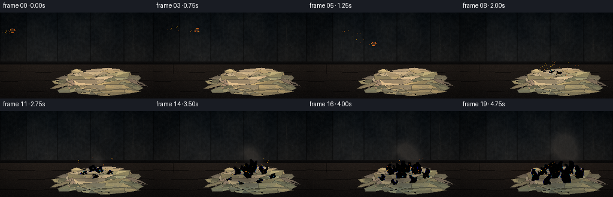
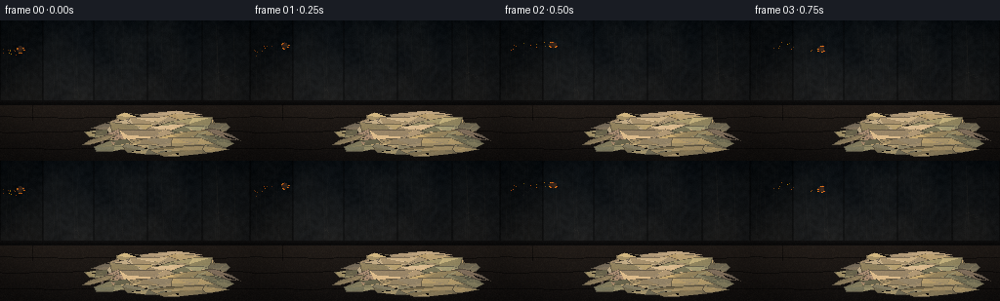
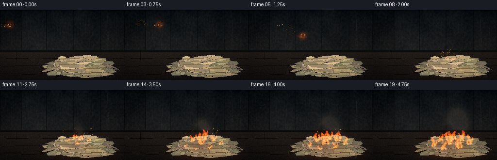
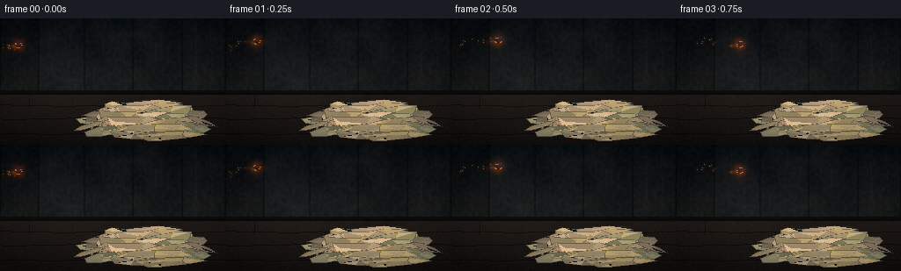

CODING AGENTS AS PIXEL WORLD MODELS
traex/DeepSeek-V4.1-Flash · phygen_141
点击播放 · 原生 RGB 像素
逐轮保存的候选
回放视频、检查图与代码变化。
每份候选均可单独播放。实际图片检查记录在下方工具轨迹中。
候选 01播放与检查图
点击播放 · 原生 RGB 像素


展开代码变化
--- 上一保存版本
+++ 本次保存版本
@@ -0,0 +1,625 @@
+from pathlib import Path
+import math
+
+import numpy as np
+from PIL import Image, ImageDraw
+from scipy.ndimage import gaussian_filter, zoom
+
+from artifact_io import save
+
+
+W, H, N, FPS = 256, 144, 20, 4.0
+CASE_DIR = Path(__file__).resolve().parent
+RNG = np.random.default_rng(141)
+
+
+def smoothstep(a, b, x):
+ t = np.clip((x - a) / (b - a), 0.0, 1.0)
+ return t * t * (3.0 - 2.0 * t)
+
+
+def mix(a, b, t):
+ return a * (1.0 - t) + b * t
+
+
+def screen_add(canvas, color, alpha):
+ alpha = np.clip(alpha, 0.0, 1.0)[..., None]
+ color = np.asarray(color, dtype=np.float32) / 255.0
+ return 1.0 - (1.0 - canvas) * (1.0 - color * alpha)
+
+
+def noise_field(w, h, scale, seed):
+ rng = np.random.default_rng(seed)
+ small = rng.random((max(2, int(h / scale)), max(2, int(w / scale)))).astype(np.float32)
+ field = zoom(small, (h / small.shape[0], w / small.shape[1]), order=3)
+ field = field[:h, :w]
+ if field.shape != (h, w):
+ field = np.pad(field, ((0, h - field.shape[0]), (0, w - field.shape[1])), mode="edge")
+ return np.clip(field, 0.0, 1.0)
+
+
+def base_scene():
+ yy, xx = np.mgrid[0:H, 0:W].astype(np.float32)
+
+ # Dim plaster wall, with a faint blue-grey ambient so the fire reads warm.
+ wall_t = np.clip(yy / 88.0, 0.0, 1.0)
+ wall_top = np.array([12, 17, 20], dtype=np.float32)
+ wall_bottom = np.array([31, 29, 27], dtype=np.float32)
+ canvas = mix(wall_top[None, None, :], wall_bottom[None, None, :], wall_t[..., None])
+
+ fine = noise_field(W, H, 3.2, 11) - 0.5
+ coarse = noise_field(W, H, 18.0, 12) - 0.5
+ canvas += fine[..., None] * 7.0
+ canvas += coarse[..., None] * np.array([9.0, 7.0, 5.0])
+
+ # Vertical wood panels in the background.
+ panel_edges = [0, 44, 96, 151, 207, 256]
+ for edge in panel_edges:
+ x0, x1 = max(0, edge - 1), min(W, edge + 1)
+ canvas[:, x0:x1] *= 0.66
+ for i in range(len(panel_edges) - 1):
+ x0, x1 = panel_edges[i], panel_edges[i + 1]
+ tone = (i * 13 % 7 - 3) * 0.9
+ canvas[:84, x0:x1] += tone
+ for k in range(5):
+ gx = x0 + 7 + int((k * 17 + i * 11) % max(1, x1 - x0 - 14))
+ phase = (k + i * 0.7) * 0.8
+ gy = np.arange(5, 80)
+ line_x = gx + (2.0 * np.sin(gy * 0.075 + phase)).astype(int)
+ valid = (line_x >= x0) & (line_x < x1)
+ canvas[gy[valid], line_x[valid]] += np.array([4.0, 3.0, 2.0])
+
+ # Baseboard and floor.
+ canvas[82:87] = np.array([17, 15, 14], dtype=np.float32)
+ canvas[84:88] *= 0.72
+ floor_t = np.clip((yy - 87) / 57.0, 0.0, 1.0)
+ floor_col = mix(
+ np.array([39, 30, 24], dtype=np.float32)[None, None, :],
+ np.array([20, 16, 14], dtype=np.float32)[None, None, :],
+ floor_t[..., None],
+ )
+ floor_mask = yy >= 87
+ canvas[floor_mask] = floor_col[floor_mask]
+
+ # Broad planks and fine grain.
+ for seam in (99, 114, 131):
+ for x in range(W):
+ y = seam + int(1.2 * math.sin(x * 0.043 + seam))
+ if 0 <= y < H:
+ canvas[y, x] *= 0.52
+ for j, joint in enumerate((33, 113, 204)):
+ y0 = 87 + j * 12
+ y1 = min(H, y0 + 16)
+ for y in range(y0, y1):
+ canvas[y, joint] *= 0.55
+ floor_noise = noise_field(W, H, 2.2, 17)
+ floor_line = np.abs(np.sin(xx * 0.075 + yy * 0.18 + floor_noise * 5.0))
+ floor_mask = yy >= 88
+ grain = ((floor_line > 0.93) & floor_mask) * 5.0
+ canvas += grain[..., None] * np.array([0.9, 0.65, 0.42])
+
+ # Soot and age around the pile area.
+ soot = np.exp(-(((xx - 172) / 72.0) ** 2 + ((yy - 80) / 47.0) ** 2))
+ soot *= 0.55 + 0.45 * noise_field(W, H, 9.0, 21)
+ canvas *= (1.0 - 0.22 * soot[..., None])
+
+ # Sparse low-contrast wall marks.
+ for sx, sy, length, tilt in ((23, 35, 19, -0.4), (221, 53, 25, 0.25), (76, 69, 11, 0.6)):
+ for step in range(length):
+ x = int(sx + step * 0.55)
+ y = int(sy + step * tilt + 1.4 * math.sin(step * 0.8))
+ if 0 <= x < W and 0 <= y < 82:
+ canvas[y, x] += np.array([5.0, 4.0, 3.0])
+
+ return np.clip(canvas, 0, 255)
+
+
+def irregular_polygon(cx, cy, rx, ry, angle, points, jag, rng):
+ verts = []
+ for i in range(points):
+ a = 2.0 * math.pi * i / points + rng.normal(0.0, 0.055)
+ rad = 1.0 + rng.uniform(-jag, jag)
+ px, py = math.cos(a) * rx * rad, math.sin(a) * ry * rad
+ ca, sa = math.cos(angle), math.sin(angle)
+ verts.append((int(round(cx + px * ca - py * sa)), int(round(cy + px * sa + py * ca))))
+ return verts
+
+
+def polygon_mask(verts):
+ mask = Image.new("L", (W, H), 0)
+ ImageDraw.Draw(mask).polygon(verts, fill=255)
+ return np.asarray(mask) > 0
+
+
+def add_paper(canvas, paper, rng):
+ cx, cy, rx, ry, angle, tint, points, jag = paper
+ verts = irregular_polygon(cx, cy, rx, ry, angle, points, jag, rng)
+ mask = polygon_mask(verts)
+ if not np.any(mask):
+ return
+
+ base = np.array([188, 174, 142], dtype=np.float32) * tint
+ base += np.array([rng.uniform(-7, 7), rng.uniform(-5, 5), rng.uniform(-8, 8)], dtype=np.float32)
+ base = np.clip(base, 78, 224)
+
+ # Faceted, folded-paper surface.
+ ys, xs = np.nonzero(mask)
+ cx_i = int(np.clip(np.mean(xs), 2, W - 3))
+ cy_i = int(np.clip(np.mean(ys), 2, H - 3))
+ inner = []
+ for _ in range(4):
+ inner.append(
+ (
+ int(cx + rng.normal(0, rx * 0.32)),
+ int(cy + rng.normal(0, ry * 0.28)),
+ )
+ )
+ anchors = verts[:: max(1, len(verts) // 5)] + [verts[0]]
+ facets = []
+ for i in range(len(anchors) - 1):
+ mid = inner[(i + 1) % len(inner)]
+ facets.append((anchors[i], anchors[i + 1], (cx_i, cy_i), mid))
+
+ for tri in facets:
+ facet_mask = polygon_mask(tri) & mask
+ shade = rng.uniform(0.72, 1.13)
+ warm = rng.uniform(-4.0, 7.0)
+ color = np.clip(base * shade + np.array([warm, warm * 0.55, -warm * 0.2]), 42, 238)
+ canvas[facet_mask] = color
+
+ # Thin compressed edges and a few fold highlights.
+ outline = Image.new("L", (W, H), 0)
+ ImageDraw.Draw(outline).line(verts + [verts[0]], fill=255, width=1)
+ edge = (np.asarray(outline) > 0) & mask
+ canvas[edge] = mix(canvas[edge], np.array([69, 57, 45], dtype=np.float32), 0.55)
+ for _ in range(2):
+ x0 = int(cx + rng.normal(0, rx * 0.35))
+ y0 = int(cy + rng.normal(0, ry * 0.35))
+ x1 = int(x0 + rng.uniform(-rx * 0.55, rx * 0.55))
+ y1 = int(y0 + rng.uniform(-ry * 0.55, ry * 0.55))
+ line = Image.new("L", (W, H), 0)
+ ImageDraw.Draw(line).line((x0, y0, x1, y1), fill=255, width=1)
+ fold = (np.asarray(line) > 0) & mask
+ canvas[fold] += np.array([15.0, 12.0, 8.0])
+
+ # Sparse paper grain.
+ texture = rng.normal(0.0, 2.1, (H, W, 1)).astype(np.float32)
+ canvas[mask] += texture[mask] * np.array([1.0, 0.9, 0.72])
+
+
+def draw_pile(canvas):
+ rng = np.random.default_rng(742)
+ papers = []
+
+ # Back layer: loose, flat sheets and the crown of the pile.
+ back = [
+ (121, 107, 25, 6.0, -0.12, 0.88, 8, 0.20),
+ (145, 101, 28, 5.2, 0.10, 0.96, 9, 0.18),
+ (171, 98, 31, 5.5, -0.04, 1.03, 10, 0.16),
+ (199, 102, 27, 6.2, 0.11, 0.92, 8, 0.22),
+ (218, 110, 21, 6.4, -0.10, 0.86, 8, 0.20),
+ (110, 117, 20, 6.0, 0.13, 0.81, 8, 0.24),
+ ]
+ papers.extend(back)
+
+ # Middle mass: overlapping folded papers, ordered roughly back to front.
+ middle = [
+ (133, 109, 29, 8.0, -0.18, 1.00, 9, 0.23),
+ (162, 106, 33, 7.5, 0.08, 1.08, 10, 0.20),
+ (190, 108, 31, 8.0, -0.10, 0.97, 9, 0.22),
+ (146, 114, 32, 8.5, 0.16, 0.93, 9, 0.22),
+ (176, 113, 36, 8.7, -0.03, 1.06, 10, 0.18),
+ (207, 117, 28, 8.4, 0.12, 0.88, 8, 0.24),
+ (123, 120, 23, 7.5, -0.10, 0.90, 8, 0.25),
+ (156, 120, 36, 9.0, 0.07, 1.02, 10, 0.19),
+ (190, 121, 33, 9.2, -0.12, 0.95, 9, 0.22),
+ (218, 124, 22, 7.0, 0.15, 0.82, 8, 0.26),
+ ]
+ papers.extend(middle)
+
+ # Front layer with curled silhouettes and visible sheet edges.
+ front = [
+ (139, 126, 31, 7.0, -0.09, 0.88, 8, 0.23),
+ (170, 126, 38, 7.4, 0.04, 1.00, 10, 0.19),
+ (201, 128, 29, 7.2, 0.10, 0.91, 8, 0.22),
+ (117, 128, 19, 5.7, -0.18, 0.82, 7, 0.25),
+ (151, 132, 26, 5.2, 0.10, 0.96, 8, 0.20),
+ (183, 133, 30, 5.4, -0.04, 0.89, 9, 0.22),
+ ]
+ papers.extend(front)
+
+ for paper in papers:
+ add_paper(canvas, paper, rng)
+
+ # A few loose, nearly flat sheets at the edges.
+ rng2 = np.random.default_rng(981)
+ for paper in (
+ (101, 122, 19, 3.0, -0.30, 0.78, 6, 0.16),
+ (228, 117, 17, 3.4, 0.32, 0.76, 6, 0.18),
+ ):
+ add_paper(canvas, paper, rng2)
+
+
+def bezier_point(t):
+ p0 = np.array([17.0, 31.0])
+ p1 = np.array([79.0, 3.0])
+ p2 = np.array([153.0, 95.0])
+ return (1 - t) ** 2 * p0 + 2 * (1 - t) * t * p1 + t * t * p2
+
+
+def add_glow_point(emission, x, y, strength, radius=1.0):
+ xi, yi = int(round(x)), int(round(y))
+ for dy in range(-2, 3):
+ for dx in range(-2, 3):
+ xx, yy = xi + dx, yi + dy
+ if 0 <= xx < W and 0 <= yy < H:
+ d2 = dx * dx + dy * dy
+ emission[yy, xx] += strength * math.exp(-d2 / (2.0 * radius * radius))
+
+
+def draw_smoke(canvas, frame):
+ if frame < 6:
+ return canvas
+ yy, xx = np.mgrid[0:H, 0:W].astype(np.float32)
+ smoke = np.zeros((H, W), dtype=np.float32)
+ rng = np.random.default_rng(340 + frame * 17)
+
+ # Small trail behind the airborne paper, then impact dust.
+ if frame < 8:
+ for back in range(1, 4):
+ t = max(0.02, (frame - back) / 7.0)
+ x, y = bezier_point(t)
+ sx, sy = x - 3.0, y - 2.0 + back * 1.1
+ smoke += np.exp(-(((xx - sx) / 4.5) ** 2 + ((yy - sy) / 3.2) ** 2)) * (0.12 + 0.03 * back)
+ else:
+ age = frame - 7
+ for i in range(7):
+ delay = i * 1.35
+ life = max(0.0, age - delay)
+ if life <= 0:
+ continue
+ sx = 153 + i * 5.2 + life * 1.2 + math.sin(frame * 0.7 + i) * 2.2
+ sy = 93 - life * 3.5 - i * 0.5
+ spread = 5.0 + life * 1.4
+ p = np.exp(-(((xx - sx) / spread) ** 2 + ((yy - sy) / (spread * 0.85)) ** 2))
+ smoke += p * min(0.24, 0.08 + life * 0.025)
+
+ smoke = gaussian_filter(smoke, sigma=2.2)
+ smoke *= 0.75 + 0.25 * noise_field(W, H, 8.0, 800 + frame)
+ smoke = np.clip(smoke, 0.0, 0.34)
+ # Smoke is a slightly warmer grey than the wall, with faint orange underlight.
+ smoke_col = np.array([91, 78, 67], dtype=np.float32)
+ canvas = canvas * (1.0 - smoke[..., None]) + smoke_col[None, None, :] * smoke[..., None]
+ return canvas
+
+
+def draw_flame_field(canvas, field):
+ if field.max() <= 0.01:
+ return canvas
+ f = np.clip(field, 0.0, 1.2)
+ alpha = smoothstep(0.075, 0.33, f)
+
+ low = np.array([195, 29, 4], dtype=np.float32)
+ mid = np.array([255, 91, 7], dtype=np.float32)
+ high = np.array([255, 176, 29], dtype=np.float32)
+ core = np.array([255, 239, 148], dtype=np.float32)
+ t1 = np.clip((f - 0.12) / 0.45, 0, 1)[..., None]
+ t2 = np.clip((f - 0.52) / 0.36, 0, 1)[..., None]
+ t3 = np.clip((f - 0.82) / 0.30, 0, 1)[..., None]
+ color = mix(low[None, None, :], mid[None, None, :], t1)
+ color = mix(color, high[None, None, :], t2)
+ color = mix(color, core[None, None, :], t3)
+ return screen_add(canvas, color * 255.0, alpha * 0.94)
+
+
+def add_tongue(field, x, y, height, width, phase, sway, seed, lean=0.0):
+ yy, xx = np.mgrid[0:H, 0:W].astype(np.float32)
+ dy = y - yy
+ u = np.clip(dy / max(height, 1.0), 0.0, 1.0)
+ active = (dy >= 0.0) & (dy <= height)
+
+ center = x + sway * np.sin(phase + u * 4.1) + lean * (u ** 1.7)
+ taper = np.sin(np.pi * (0.075 + 0.86 * u)) ** 0.62
+ width_profile = width * (0.45 + 0.55 * taper) * (1.0 - 0.24 * u)
+ width_profile += 0.38 * np.sin(phase * 1.7 + u * 17.0)
+ width_profile = np.maximum(width_profile, 0.38)
+ dist = np.abs(xx - center)
+
+ ripple = 0.82 + 0.18 * np.sin(seed + u * 16.0 + xx * 0.08)
+ tongue = np.exp(-1.75 * (dist / width_profile) ** 2) * (1.0 - u) ** 0.32 * ripple
+ tongue *= active
+ return np.maximum(field, tongue)
+
+
+def flame_sources(frame):
+ # (base x, base y, ignition frame, max height, width, phase, sway)
+ data = [
+ (153, 100, 7, 18, 5.2, 0.3, 2.2),
+ (165, 102, 8, 27, 6.4, 1.4, 2.8),
+ (140, 105, 9, 21, 5.3, 2.3, 2.5),
+ (183, 104, 10, 26, 6.4, 3.1, 2.8),
+ (158, 111, 11, 31, 7.0, 4.0, 3.2),
+ (199, 111, 12, 24, 5.7, 5.1, 2.4),
+ (126, 115, 13, 20, 5.0, 5.8, 2.0),
+ (177, 119, 13, 29, 6.2, 0.8, 2.9),
+ (146, 122, 14, 24, 5.5, 2.0, 2.6),
+ ]
+ active = []
+ for index, (x, y, start, max_h, width, phase, sway) in enumerate(data):
+ if frame < start:
+ continue
+ age = frame - start
+ growth = smoothstep(0.0, 7.0, age)
+ flicker = 0.91 + 0.09 * math.sin(frame * 1.73 + phase * 2.1)
+ h = max_h * (0.22 + 0.78 * growth) * flicker
+ w = width * (0.48 + 0.52 * growth)
+ active.append((x, y, h, w, phase, sway, index))
+ return active
+
+
+def render_fire(canvas, frame):
+ field = np.zeros((H, W), dtype=np.float32)
+ for x, y, h, w, phase, sway, index in flame_sources(frame):
+ # Back flames are slightly smaller and first, but one combined field
+ # keeps the palette coherent and avoids pasted-on blobs.
+ depth_scale = 0.84 if y < 108 else 1.0
+ field = add_tongue(
+ field, x, y, h * depth_scale, w * depth_scale,
+ phase + frame * 0.78, sway, 3.0 + index * 1.7,
+ lean=math.sin(frame * 0.62 + phase) * 1.7,
+ )
+ field = add_tongue(
+ field, x - w * 0.48, y + 1, h * 0.66, w * 0.55,
+ phase * 1.7 + frame * 1.03, sway * 0.7, 7.0 + index,
+ lean=-2.2 + math.sin(frame * 0.8 + phase) * 1.1,
+ )
+ field = add_tongue(
+ field, x + w * 0.52, y, h * 0.76, w * 0.58,
+ phase * 0.8 + frame * 0.91 + 2.2, sway * 0.8, 9.0 + index,
+ lean=2.0 + math.cos(frame * 0.65 + phase) * 1.2,
+ )
+ return draw_flame_field(canvas, field)
+
+
+def draw_ball(canvas, frame):
+ if frame >= 7:
+ return canvas
+ t = max(0.025, frame / 7.0)
+ x, y = bezier_point(t)
+ rng = np.random.default_rng(1200 + frame)
+
+ # Emissive halo and a short flame tail.
+ yy, xx = np.mgrid[0:H, 0:W].astype(np.float32)
+ halo = np.exp(-(((xx - x) / 7.0) ** 2 + ((yy - y) / 7.0) ** 2))
+ canvas = screen_add(canvas, np.array([255, 84, 12], dtype=np.float32), halo * 0.38)
+ for i in range(1, 5):
+ tx = x - i * 3.3
+ ty = y + 1.4 + math.sin(frame * 1.4 + i) * 1.1
+ spot = np.exp(-(((xx - tx) / 2.2) ** 2 + ((yy - ty) / 1.8) ** 2))
+ canvas = screen_add(canvas, np.array([255, 74, 8], dtype=np.float32), spot * (0.28 / i))
+
+ verts = []
+ angle0 = frame * 0.42
+ for i in range(10):
+ a = 2.0 * math.pi * i / 10 + angle0
+ radius = 3.4 + rng.uniform(-0.9, 0.9)
+ verts.append((int(round(x + math.cos(a) * radius)), int(round(y + math.sin(a) * radius * 0.92))))
+ mask = polygon_mask(verts)
+ canvas[mask] = np.array([55, 35, 25], dtype=np.float32)
+
+ # Crumpled char facets.
+ center = (int(round(x)), int(round(y)))
+ for i in range(5):
+ a0 = i * 2.0 * math.pi / 5 + angle0
+ a1 = (i + 1) * 2.0 * math.pi / 5 + angle0
+ tri = (
+ center,
+ (int(x + math.cos(a0) * 4.5), int(y + math.sin(a0) * 4.2)),
+ (int(x + math.cos(a1) * 4.5), int(y + math.sin(a1) * 4.2)),
+ )
+ fm = polygon_mask(tri) & mask
+ canvas[fm] = np.array([58 + i * 5, 38 + i * 3, 27 + i * 2], dtype=np.float32)
+
+ # Burning fissures on the leading edge.
+ for i in range(6):
+ a = angle0 + i * 1.9
+ px = int(round(x + math.cos(a) * 3.6))
+ py = int(round(y + math.sin(a) * 3.2))
+ if 0 <= px < W and 0 <= py < H:
+ canvas[py, px] = np.array([255, 168, 38], dtype=np.float32)
+ if 0 <= px + 1 < W:
+ canvas[py, px + 1] = np.maximum(canvas[py, px + 1], np.array([255, 92, 14]))
+ return canvas
+
+
+def draw_impact(canvas, frame):
+ if frame != 7:
+ return canvas
+ yy, xx = np.mgrid[0:H, 0:W].astype(np.float32)
+ x, y = 153.0, 95.0
+ flash = np.exp(-(((xx - x) / 8.5) ** 2 + ((yy - y) / 5.2) ** 2))
+ canvas = screen_add(canvas, np.array([255, 224, 118], dtype=np.float32), flash * 0.92)
+
+ rng = np.random.default_rng(1999)
+ for i in range(34):
+ angle = rng.uniform(-math.pi, math.pi)
+ length = rng.uniform(4.0, 16.0)
+ inner = 2.0
+ x0 = int(round(x + math.cos(angle) * inner))
+ y0 = int(round(y + math.sin(angle) * inner))
+ x1 = int(round(x + math.cos(angle) * length))
+ y1 = int(round(y + math.sin(angle) * length * 0.65))
+ line = Image.new("L", (W, H), 0)
+ ImageDraw.Draw(line).line((x0, y0, x1, y1), fill=255, width=1)
+ m = np.asarray(line) > 0
+ col = np.array([255, rng.uniform(120, 225), rng.uniform(35, 95)], dtype=np.float32)
+ canvas[m] = np.maximum(canvas[m], col)
+ return canvas
+
+
+def spark_layer(frame):
+ core = np.zeros((H, W, 3), dtype=np.float32)
+ glow = np.zeros((H, W, 3), dtype=np.float32)
+
+ def dot(x, y, color, scale=1.0):
+ xi, yi = int(round(x)), int(round(y))
+ if 0 <= xi < W and 0 <= yi < H:
+ core[yi, xi] = np.maximum(core[yi, xi], np.array(color, dtype=np.float32) * scale)
+ if 0 <= xi < W and 0 <= yi < H:
+ glow[yi, xi] += np.array(color, dtype=np.float32) * scale
+
+ # Trail sparks before impact.
+ if frame < 7:
+ rng = np.random.default_rng(2400 + frame)
+ for i in range(10):
+ t = max(0.0, (frame - rng.uniform(0.0, 2.2)) / 7.0)
+ bx, by = bezier_point(t)
+ x = bx - rng.uniform(1.0, 16.0)
+ y = by + rng.uniform(-4.0, 5.0)
+ dot(x, y, (255, rng.uniform(95, 200), 18), rng.uniform(0.4, 1.0))
+
+ # Impact particles.
+ if 7 <= frame <= 11:
+ rng = np.random.default_rng(2700)
+ t = (frame - 7) / 4.0
+ for i in range(48):
+ angle = rng.uniform(-math.pi * 0.95, math.pi * 0.95)
+ speed = rng.uniform(18.0, 67.0)
+ vx, vy = math.cos(angle) * speed, math.sin(angle) * speed
+ x = 153.0 + vx * t
+ y = 95.0 + vy * t + 38.0 * t * t
+ life = max(0.0, 1.0 - t * 1.25) * rng.uniform(0.45, 1.0)
+ if life > 0.02:
+ dot(x, y, (255, rng.uniform(100, 225), rng.uniform(12, 70)), life)
+
+ # Sustained embers above the blaze.
+ if frame >= 8:
+ rng = np.random.default_rng(3100 + frame)
+ count = 10 + min(22, (frame - 8) * 3)
+ for i in range(count):
+ x0 = rng.uniform(125, 207)
+ y0 = rng.uniform(94, 123)
+ rise = rng.uniform(4.0, 23.0) * (1.0 - 0.018 * (frame - 8))
+ x = x0 + math.sin(frame * 0.83 + i * 2.3) * rng.uniform(0.5, 3.2)
+ y = y0 - rise
+ brightness = rng.uniform(0.35, 1.0)
+ dot(x, y, (255, rng.uniform(95, 220), rng.uniform(14, 62)), brightness)
+
+ glow = gaussian_filter(glow, sigma=(1.2, 1.2, 0))
+ return core, glow
+
+
+def add_sparks(canvas, frame):
+ core, glow = spark_layer(frame)
+ canvas = screen_add(canvas, glow * 1.8, 0.55)
+ # Additive white-hot centers.
+ lit = core.max(axis=2) > 0.0
+ canvas[lit] = np.maximum(canvas[lit], np.clip(core[lit], 0, 255))
+ return canvas
+
+
+def add_firelight(canvas, frame):
+ yy, xx = np.mgrid[0:H, 0:W].astype(np.float32)
+ emission = np.zeros((H, W), dtype=np.float32)
+
+ if frame < 7:
+ x, y = bezier_point(max(0.025, frame / 7.0))
+ add_glow_point(emission, x, y, 0.28, 2.4)
+ else:
+ age = frame - 7
+ for x, y, start, max_h, width, phase, sway in (
+ (153, 100, 7, 18, 5.2, 0.3, 2.2),
+ (165, 102, 8, 27, 6.4, 1.4, 2.8),
+ (140, 105, 9, 21, 5.3, 2.3, 2.5),
+ (183, 104, 10, 26, 6.4, 3.1, 2.8),
+ (158, 111, 11, 31, 7.0, 4.0, 3.2),
+ (199, 111, 12, 24, 5.7, 5.1, 2.4),
+ (126, 115, 13, 20, 5.0, 5.8, 2.0),
+ (177, 119, 13, 29, 6.2, 0.8, 2.9),
+ (146, 122, 14, 24, 5.5, 2.0, 2.6),
+ ):
+ if frame < start:
+ continue
+ a = smoothstep(0.0, 7.0, frame - start)
+ add_glow_point(emission, x, y, 0.10 + 0.17 * a, 2.0)
+ add_glow_point(emission, x, y - max_h * (0.2 + 0.25 * a), 0.04 + 0.08 * a, 2.4)
+
+ broad = gaussian_filter(emission, sigma=11.0)
+ tight = gaussian_filter(emission, sigma=4.0)
+ glow = np.clip(broad * 2.8 + tight * 1.6, 0.0, 1.0)
+ # Restrict most spill to the room and paper, leaving the fire core to the flames.
+ canvas = screen_add(canvas, np.array([255, 105, 30], dtype=np.float32), glow * 0.58)
+
+ # Low, warm bounce on the table directly below the fire.
+ if frame >= 7:
+ age = min(1.0, (frame - 7) / 8.0)
+ reflection = np.exp(-(((xx - 165) / 61.0) ** 2 + ((yy - 129) / 18.0) ** 2))
+ canvas = screen_add(
+ canvas,
+ np.array([255, 89, 21], dtype=np.float32),
+ reflection * (0.05 + 0.13 * age),
+ )
+ return canvas
+
+
+def add_char(canvas, frame):
+ if frame < 8:
+ return canvas
+ yy, xx = np.mgrid[0:H, 0:W].astype(np.float32)
+ age = frame - 7
+ radius = 9.0 + age * 4.0
+ char = np.exp(-(((xx - 157) / radius) ** 2 + ((yy - 113) / (radius * 0.42)) ** 2))
+ char *= smoothstep(8, 13, frame) * 0.52
+ canvas *= (1.0 - char[..., None] * 0.72)
+ canvas += np.array([34.0, 15.0, 7.0]) * char[..., None]
+ return canvas
+
+
+def finish_frame(canvas, frame):
+ canvas = np.clip(canvas, 0, 255)
+
+ # Gentle vignette keeps the eye on the paper pile.
+ yy, xx = np.mgrid[0:H, 0:W].astype(np.float32)
+ nx = (xx - W * 0.53) / (W * 0.64)
+ ny = (yy - H * 0.53) / (H * 0.64)
+ vignette = np.clip(1.0 - 0.40 * (nx * nx + ny * ny), 0.62, 1.0)
+ canvas *= vignette[..., None]
+
+ # Slight cool grade in the shadows, warm grade in the highlights.
+ lum = canvas.mean(axis=2, keepdims=True) / 255.0
+ shadow_tint = np.array([0.93, 1.00, 1.07], dtype=np.float32)
+ warm_tint = np.array([1.055, 1.005, 0.91], dtype=np.float32)
+ grade = mix(shadow_tint, warm_tint, np.clip((lum - 0.12) * 2.1, 0, 1))
+ canvas *= grade
+
+ # Deterministic film grain, strongest in the dark midtones.
+ rng = np.random.default_rng(6000 + frame)
+ grain = rng.normal(0.0, 1.55, (H, W, 1)).astype(np.float32)
+ midtone = 0.45 + 0.55 * (1.0 - np.abs(lum - 0.45) * 1.4)
+ canvas += grain * midtone
+
+ # Quantize to an RGB image without flattening the fine glow gradients.
+ return np.clip(np.rint(canvas), 0, 255).astype(np.uint8)
+
+
+def render_frame(frame):
+ canvas = base_scene()
+ draw_pile(canvas)
+ canvas = add_char(canvas, frame)
+ canvas = draw_smoke(canvas, frame)
+ canvas = add_firelight(canvas, frame)
+ canvas = render_fire(canvas, frame)
+ canvas = draw_ball(canvas, frame)
+ canvas = draw_impact(canvas, frame)
+ canvas = add_sparks(canvas, frame)
+ return finish_frame(canvas, frame)
+
+
+def main():
+ frames = np.stack([render_frame(frame) for frame in range(N)])
+ save(frames, CASE_DIR)
+ print(f"Saved {N} frames to {CASE_DIR}")
+
+
+if __name__ == "__main__":
+ main()
候选 02播放与检查图
点击播放 · 原生 RGB 像素


展开代码变化
--- 上一保存版本
+++ 本次保存版本
@@ -23,9 +23,10 @@
def screen_add(canvas, color, alpha):
+ canvas = np.clip(canvas, 0.0, 255.0) / 255.0
alpha = np.clip(alpha, 0.0, 1.0)[..., None]
color = np.asarray(color, dtype=np.float32) / 255.0
- return 1.0 - (1.0 - canvas) * (1.0 - color * alpha)
+ return (1.0 - (1.0 - canvas) * (1.0 - color * alpha)) * 255.0
def noise_field(w, h, scale, seed):
@@ -309,7 +310,7 @@
color = mix(low[None, None, :], mid[None, None, :], t1)
color = mix(color, high[None, None, :], t2)
color = mix(color, core[None, None, :], t3)
- return screen_add(canvas, color * 255.0, alpha * 0.94)
+ return screen_add(canvas, color, alpha * 0.94)
def add_tongue(field, x, y, height, width, phase, sway, seed, lean=0.0):
@@ -511,7 +512,7 @@
def add_sparks(canvas, frame):
core, glow = spark_layer(frame)
- canvas = screen_add(canvas, glow * 1.8, 0.55)
+ canvas = screen_add(canvas, np.clip(glow * 1.8, 0, 255), 0.55)
# Additive white-hot centers.
lit = core.max(axis=2) > 0.0
canvas[lit] = np.maximum(canvas[lit], np.clip(core[lit], 0, 255))
可观测工具轨迹
实际执行的命令与返回图片。
命令 1exit 0
/bin/bash -c "pwd && rg --files -g 'prompt.txt' -g 'GENERATION_RULES.md' -g 'task_spec.json' -g '"'!**/.git/**'"'"
命令 2exit 0
/bin/bash -c "ls -la && find . -maxdepth 2 -type f -printf '%p\\n' | sort | head -200"
命令 3exit 0
/bin/bash -c 'cat prompt.txt'
命令 4exit 0
/bin/bash -c 'cat GENERATION_RULES.md'
命令 5exit 0
/bin/bash -c 'cat task_spec.json'
命令 6exit 0
/bin/bash -c "sed -n '1,240p' artifact_io.py && sed -n '1,220p' player_template.html"
命令 7exit 0
/bin/bash -c "python3 - <<'PY'
import sys, numpy, PIL
print(sys.version)
print('numpy', numpy.__version__)
print('PIL', PIL.__version__)
try:
import scipy; print('scipy', scipy.__version__)
except Exception as e: print('no scipy', e)
PY"命令 8exit 0
/bin/bash -c 'command -v ffmpeg || true; command -v chafa || true; command -v viu || true; command -v jp2 || true; command -v img2txt || true'
命令 9exit 0
/bin/bash -c 'fc-list | head -5'
命令 10exit 1
/bin/bash -c 'python3 generate.py'
命令 11exit 0
/bin/bash -c 'python3 generate.py'
命令 12exit 0
/bin/bash -c "python3 - <<'PY'
from PIL import Image
im=Image.open('inspection.png')
print(im.size)
# print luminance ascii sheet, 4x downsample
im=im.resize((128, 92))
g=im.convert('L')
chars=' .:-=+*#%@'
for y in range(0,g.height,2):
print(''.join(chars[min(len(chars)-1, g.getpixel((x,y))*len(chars)//256)] for x in range(g.width)))
PY"命令 13exit 0
/bin/bash -c "python3 - <<'PY'
from PIL import Image
import numpy as np
chars=' .:-=+*#%@'
for f in [0,3,5,6,7,8,10,12,15,19]:
im=Image.open(f'frames/{f:02d}.png').convert('RGB')
# average 4x4 blocks -> 64x36
a=np.asarray(im).astype(float).mean(2)
a=a.reshape(36,4,64,4).mean((1,3))
print('\\nFRAME',f)
for row in a:
print(''.join(chars[min(9,int(v/256*10))] for v in row))
PY"命令 14exit 0
/bin/bash -c "python3 - <<'PY'
from PIL import Image
import numpy as np
for f in [0,7,10,15,19]:
a=np.asarray(Image.open(f'frames/{f:02d}.png')).astype(float)
print(f, 'min/max/mean', a.min(), a.max(), a.mean(), 'fire px', ((a[:,:,0]>180)&(a[:,:,0]>a[:,:,1]*1.4)).sum(), 'nearblack', (a.max(2)<20).sum())
PY"命令 15exit 0
/bin/bash -c "python3 - <<'PY'
from PIL import Image
import numpy as np
for f in [0,7,10,15,19]:
a=np.asarray(Image.open(f'frames/{f:02d}.png')).astype(float)
print('\\n',f)
# bbox bright warm pixels
m=(a[:,:,0]>110)&(a[:,:,0]>a[:,:,1]*1.25)&(a[:,:,1]>20)
yy,xx=np.nonzero(m)
print('warm bbox/count', (xx.min(),yy.min(),xx.max(),yy.max(),len(xx)) if len(xx) else None)
# max by region
for name,sl in [('air',(slice(0,85),slice(0,120))),('pile',(slice(85,140),slice(90,240)) )]:
r=a[sl]
print(name,'mean',r.mean(),'max',r.max(),'p99',np.percentile(r,99))
PY"命令 16exit 0
/bin/bash -c "python3 - <<'PY'
from PIL import Image
import numpy as np
im=Image.open('frames/10.png')
im.resize((1024,576),Image.Resampling.NEAREST).save('.tmp/frame10_big.png')
# quantized palette summary
a=np.asarray(im).reshape(-1,3)
# top 20 colors exact
u,c=np.unique(a,axis=0,return_counts=True)
for i in np.argsort(c)[-20:][::-1]: print(tuple(u[i]),c[i])
PY"命令 17exit 0
/bin/bash -c "python3 - <<'PY'
import sys
sys.path.insert(0,'.')
import generate
import numpy as np
c=generate.base_scene(); generate.draw_pile(c)
print('base mean',c.mean(),'max',c.max())
c2=generate.render_fire(c.copy(), 15)
print('fire mean',c2.mean(),'max',c2.max())
f=generate.finish_frame(c2,15)
print('final mean',f.mean(),'max',f.max(), 'red > 120', ((f[:,:,0]>120)).sum())
PY"命令 18exit 0
/bin/bash -c "rg -n \"def screen_add|screen_add\\(canvas, color|screen_add\\(canvas, glow|def add_sparks\" generate.py"
命令 19exit 0
/bin/bash -c "python3 generate.py && python3 - <<'PY'
from PIL import Image
import numpy as np
for f in [0,7,10,15,19]:
a=np.asarray(Image.open(f'frames/{f:02d}.png')).astype(float)
print(f, 'mean', round(a.mean(),1), 'max', a.max(), 'fire', ((a[:,:,0]>180)&(a[:,:,0]>a[:,:,1]*1.4)).sum(), 'neg impossible')
PY"命令 20exit 0
/bin/bash -c "python3 - <<'PY'
from PIL import Image
import numpy as np
chars=' .:-=+*#%@'
for f in [0,3,5,6,7,8,10,12,15,19]:
im=Image.open(f'frames/{f:02d}.png').convert('RGB')
a=np.asarray(im).astype(float).mean(2)
a=a.reshape(36,4,64,4).mean((1,3))
print('\\nFRAME',f)
for row in a:
print(''.join(chars[min(9,int(v/256*10))] for v in row))
PY"命令 21exit 127
/bin/bash -c 'ls -lh generate.py pixels.npz index.html inspection.png transition_check.png audio.wav 2>/dev/null || true; find frames -maxdepth 1 -type f | wc -l; file frames/00.png frames/19.png pixels.npz index.html'
命令 22exit 0
/bin/bash -c "python3 - <<'PY'
from PIL import Image
import numpy as np
from pathlib import Path
arr=[]
for f in range(20):
a=np.asarray(Image.open(f'frames/{f:02d}.png')).astype(np.float32)
arr.append(a)
warm=((a[:,:,0]>120)&(a[:,:,0]>1.28*a[:,:,1])&(a[:,:,1]>25)).sum()
bright=(a.max(2)>210).sum()
print(f'{f:02d} mean={a.mean():6.2f} std={a.std():5.2f} warm={warm:4d} bright={bright:3d}')
print('delta means')
for i in range(1,20):
print(i, round(np.abs(arr[i]-arr[i-1]).mean(),2), end=' | ')
print()
PY"命令 23exit 0
/bin/bash -c "python3 -m py_compile generate.py artifact_io.py && python3 - <<'PY'
import json
from pathlib import Path
s=json.loads(Path('task_spec.json').read_text())
print(s)
p=json.loads(Path('pixels.npz').read_text()) if False else None
PY"命令 24exit 0
/bin/bash -c "python3 - <<'PY'
from pathlib import Path
import json, re, hashlib
import numpy as np
from PIL import Image
arr=np.load('pixels.npz')['pixels']
assert arr.shape == (144,256,20), arr.shape
assert arr.dtype == np.uint32, arr.dtype
for i in range(20):
im=np.asarray(Image.open(f'frames/{i:02d}.png'))
packed=(im[:,:,0].astype(np.uint32)<<16)|(im[:,:,1].astype(np.uint32)<<8)|im[:,:,2]
assert np.array_equal(packed,arr[:,:,i])
html=Path('index.html').read_text()
assert 'window.__pixelReady=true' in html
m=re.search(r'const DATA=(\\{.*?\\}),W=',html)
assert m
D=json.loads(m.group(1))
assert D['width']==256 and D['height']==144 and D['frames']==20 and D['fps']==4.0 and D['audio'] is None
print('validated: pixels 20x256x144, PNG match, player payload', len(D['deltas']), 'deltas')
print('sha256 pixels.npz', hashlib.sha256(Path('pixels.npz').read_bytes()).hexdigest()[:16])
PY"命令 25exit 0
/bin/bash -c "python3 - <<'PY'
from PIL import Image
import numpy as np
for f in [0,6,7,19]:
im=Image.open(f'frames/{f:02d}.png')
im.resize((512,288),Image.Resampling.NEAREST).save(f'.tmp/review_{f:02d}.png')
print('wrote review images')
PY"保存候选 2 份；完成命令 25 次；可验证图片返回 0 张。原始 API 响应与完整日志保留在本地。